INTRODUCCIÓN
El arte y los artistas
No existe, realmente, el Arte. Tan sólo hay artistas. Éstos eran en otros tiempos hombres que cogían tierra coloreada y dibujaban toscamente las formas de un bisonte sobre las paredes de una cueva; hoy, compran sus colores y trazan carteles para las estaciones del metro. Entre unos y otros han hecho muchas cosas los artistas. No hay ningún mal en llamar arte a todas estas actividades, mientras tengamos en cuenta que tal palabra puede significar muchas cosas distintas, en épocas y lugares diversos, y mientras advirtamos que el Arte, escrita la palabra con A mayúscula, no existe, pues el Arte con A mayúscula tiene por esencia que ser un fantasma y un ídolo. Podéis abrumar a un artista diciéndole que lo que acaba de realizar acaso sea muy bueno a su manera, sólo que no es Arte. Y podéis llenar de confusión a alguien que atesore cuadros, asegurándole que lo que le gustó en ellos no fue precisamente Arte, sino algo distinto.
En verdad, no creo que haya ningún motivo ilícito entre los que puedan hacer que guste una escultura o un cuadro. A alguien le puede complacer un paisaje porque lo asocia a la imagen de su casa, o un retrato porque le recuerda a un amigo. No hay perjuicio en ello. Todos nosotros, cuando vemos un cuadro, nos ponemos a recordar mil cosas que influyen sobre nuestros gustos y aversiones. En tanto que esos recuerdos nos ayuden a gozar de lo que vemos, no tenemos por qué preocuparnos. Únicamente cuando un molesto recuerdo nos obsesiona, cuando instintivamente nos apartamos de una espléndida representación de un paisaje alpino porque aborrecemos el deporte de escalar, es cuando debemos sondearnos para hallar el motivo de nuestra repugnancia, que nos priva de un placer que, de otro modo, habríamos experimentado. Hay causas equivocadas de que no nos guste una obra de arte.
A mucha gente le gusta ver en los cuadros lo que también le gustaría ver en la realidad. Se trata de una preferencia perfectamente comprensible. A todos nos atrae lo bello en la naturaleza y agradecemos a los artistas que lo recojan en sus obras. Esos mismos artistas no nos censurarían por nuestros gustos. Cuando el gran artista flamenco Rubens dibujó a su hijo (ilustración 1), estaba orgulloso de sus agradables facciones y deseaba que también nosotros admiráramos al pequeño. Pero esta inclinación a los temas bonitos y atractivos puede convertirse en nociva si nos conduce a rechazar obras que representan asuntos menos agradables. El gran pintor alemán Alberto Durero seguramente dibujó a su madre (ilustración 2) con tanta devoción y cariño como Rubens a su hijo. Su verista estudio de la vejez y la decrepitud puede producirnos tan viva impresión que nos haga apartar los ojos de él, y sin embargo, si reaccionamos contra esta primera aversión, quedaremos recompensados con creces, pues el dibujo de Durero, en su tremenda sinceridad, es una gran obra.
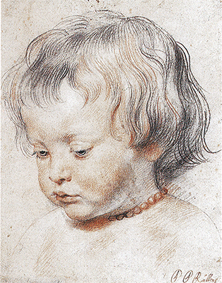
1 Pedro Pablo Rubens, Retrato de su hijo Nicolás, h. 1620. Lápiz negro y rojo sobre papel, 25,2 x 20,3 cm; Galería Albertina, Viena.
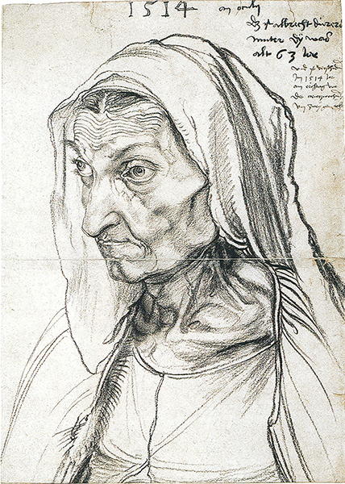
2 Alberto Durero, Retrato de su madre, 1514. Lápiz negro sobre papel, 42,1 x 30,3 cm; Gabinete de Estampas del Museo Nacional, Berlín.
En efecto, de pronto descubrimos que la hermosura de un cuadro no reside realmente en la belleza de su tema. No sé si los golfillos que el pintor español Murillo (ilustración 3) se complacía en pintar eran bellos estrictamente o no, pero tal como fueron pintados por él, poseen desde luego gran encanto. Por otra parte, muchos dirían que resulta ñoño el niño del maravilloso interior holandés de Pieter de Hooch (ilustración 4), pero igualmente es un cuadro delicioso.
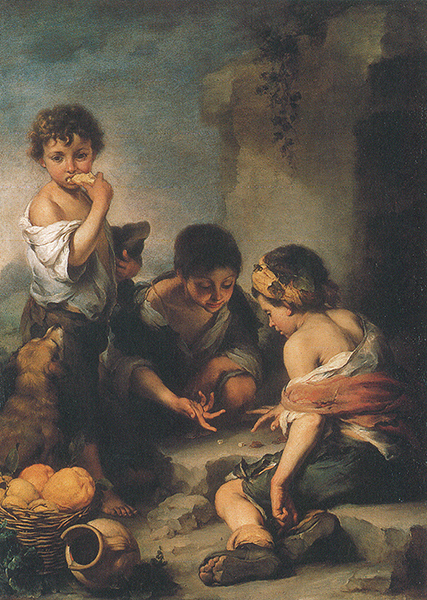
3 Bartolomé Esteban Murillo, Golfillos, h. 1670-1675. Óleo sobre lienzo, 146 x 108 cm; Antigua Pinacoteca, Munich.
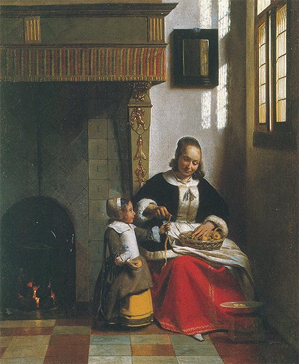
4 Pieter de Hooch, Mujer pelando manzanas en un interior, 1663. Óleo sobre lienzo, 70,5 x 54,3 cm; colección Wallace, Londres.
La confusión proviene de que varían mucho los gustos y criterios acerca de la belleza. Las ilustraciones 5 y 6 son cuadros del siglo XV que representan ángeles tocando el laúd. Muchos preferirán la obra italiana de Melozzo da Forli (ilustración 5), encantadora y sugestiva, a la de su contemporáneo nórdico Hans Memling (ilustración 6). A mí me gustan ambas. Puede tardarse un poco más en descubrir la belleza intrínseca del ángel de Memling, pero cuando se lo consiga, la encontraremos infinitamente amable.
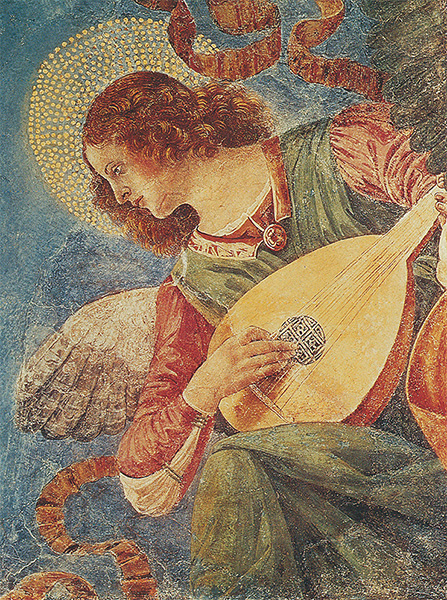
5 Melozzo da Forli, Ángel, h. 1480. Fresco, detalle; Pinacoteca, Vaticano.
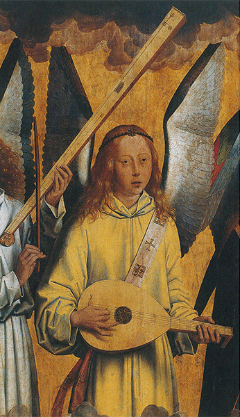
6 Hans Memling, Ángel, h. 1490. Detalle de un retablo; óleo sobre tabla; Real Museo de Bellas Artes, Amberes.
Y lo mismo que decimos de la belleza hay que decir de la expresión. En efecto, a menudo es la expresión de un personaje en el cuadro lo que hace que éste nos guste o nos disguste. Algunas personas se sienten atraídas por una expresión cuando pueden comprenderla con facilidad y, por ello, les emociona profundamente. Cuando el pintor italiano del siglo XVII Guido Reni pintó la cabeza del Cristo en la cruz (ilustración 7), se propuso, sin duda, que el contemplador encontrase en este rostro la agonía y toda la exaltación de la pasión. En los siglos posteriores, muchos seres humanos han sacado fuerzas y consuelo de una representación semejante del Cristo. El sentimiento que expresa es tan intenso y evidente que pueden hallarse reproducciones de esta obra en sencillas iglesias y apartados lugares donde la gente no tiene idea alguna acerca del Arte. Pero aunque esta intensa expresión sentimental nos impresione, no por ello deberemos desdeñar obras cuya expresión acaso no resulte tan fácil de comprender. El pintor italiano del medievo que pintó la crucifixión (ilustración 8), seguramente sintió la pasión con tanta sinceridad como Guido Reni, pero para comprender su modo de sentir, tenemos que conocer primeramente su procedimiento. Cuando llegamos a comprender estos diferentes lenguajes, podemos hasta preferir obras de arte cuya expresión es menos notoria que la de la obra de Guido Reni. Del mismo modo que hay quien prefiere a las personas que emplean ademanes y palabras breves, en los que queda algo siempre por adivinar, también hay quien se apasiona por cuadros o esculturas en los que queda algo por descubrir. En los períodos más primitivos, cuando los artistas no eran tan hábiles en representar rostros y actitudes humanas como lo son ahora, lo que con frecuencia resulta más impresionante es ver cómo, a pesar de todo, se esfuerzan en plasmar los sentimientos que quieren transmitir.
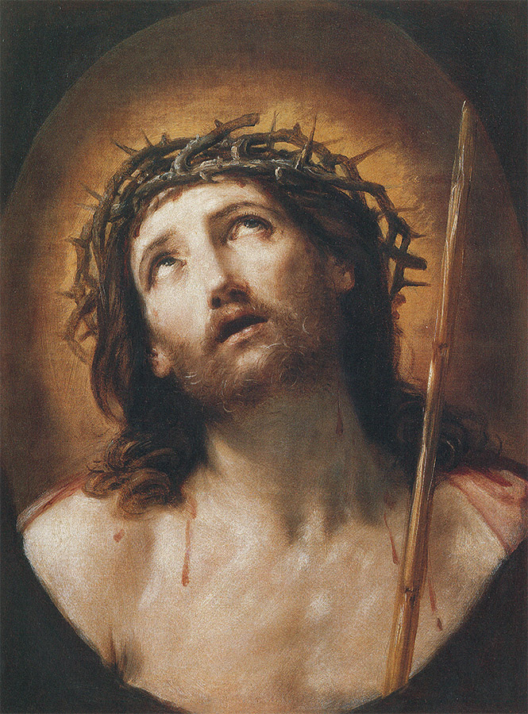
7 Guido Reni, El Cristo coronado de espinas, h. 1639-1640. Óleo sobre lienzo, 62 x 48 cm; Museo del Louvre, París.
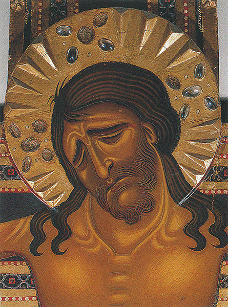
8 Maestro toscano, Cabeza del Cristo, h. 1175-1225. Detalle de una crucifixión; temple sobre tabla; Galería de los Uffizi, Florencia.
Pero con frecuencia nos encontramos con quienes tropiezan con otra dificultad. Quieren admirar la destreza del artista al representar los objetos, y lo que más les gusta son cuadros en los que algo aparece «como si fuera de verdad». Ni por un momento he de negar que es ésta una consideración importante. La paciencia y la habilidad que conducen a la representación fidedigna del mundo visible son realmente dignas de admiración. Grandes artistas de otras épocas han dedicado muchos esfuerzos a obras en las que el más pequeño pormenor ha sido registrado cuidadosamente. El estudio a la acuarela de una liebre por Durero (ilustración 9) es uno de los más famosos ejemplares de tan acendrada paciencia. Pero ¿quién diría que el dibujo de un elefante por Rembrandt (ilustración 10) es forzosamente menos bueno porque presenta menos detalles? En realidad, Rembrandt fue tan mago que nos dio la sensación de la piel rugosa de un elefante con sólo unas cuantas líneas de su carboncillo.
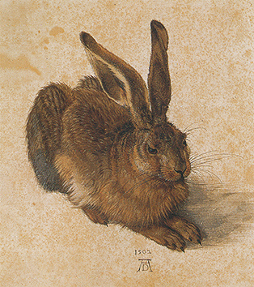
9 Alberto Durero, Liebre, 1502. Acuarela y aguada sobre papel, 25 x 22,5 cm; Galería Albertina, Viena.
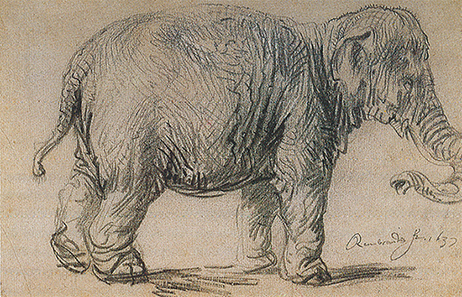
10 Rembrandt van Rijn, Elefante, 1637. Lápiz negro sobre papel, 23 x 34 cm; Galería Albertina, Viena.
Pero no sólo es el abocetamiento lo que molesta a los que prefieren que sus cuadros parezcan «de verdad». Aún sienten mayor aversión por obras que consideran dibujadas incorrectamente, en especial si pertenecen a época mucho más cercana a nosotros, en las que el artista «está obligado a saber más». En realidad, no existe misterio en estas distorsiones de la naturaleza, acerca de las cuales escuchamos tantas quejas en las discusiones en torno al arte moderno. Todo el que haya visto una película de Walt Disney lo sabe bien. Sabe que es perfectamente correcto dibujar cosas de modo distinto a como se presentan, cambiarlas y alterarlas de un modo u otro. El ratón Mickey no tiene gran cosa que ver con un ratón de verdad, pero la gente no escribe cartas indignadas a los directores de periódicos acerca de la longitud de su cola. Quienes penetran en el mundo encantado de Disney no se preocupan del Arte con A mayúscula. No van a ver sus películas armados con los mismos prejuicios que cuando van a ver una exposición de pintura moderna. Pero si un artista moderno dibuja algo a su manera peculiar, en seguida será considerado como un chapucero incapaz de hacerlo mejor. Ahora bien, pensemos como queramos de los artistas modernos, pero podemos estar seguros de que poseen conocimientos suficientes para dibujar con corrección. Si no lo hacen así es porque acaso sus razones sean muy semejantes a las de Disney.
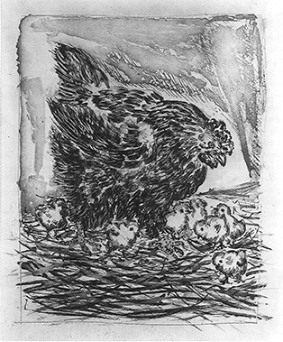
11 Pablo Picasso, Gallina con polluelos, 1941-1942. Grabado, 36 x 28 cm; ilustración para Historia natural, de Buffon.
La ilustración 11 muestra una lámina de una Historia natural ilustrada por el famoso representante del arte moderno Pablo Picasso. Nadie encontrará, seguramente, falta alguna en su deliciosa representación de una gallina con sus polluelos. Pero al dibujar un pollastrón (ilustración 12), Picasso no se contentó con presentar la simple apariencia del ave, sino que se propuso revelar su agresividad y su estúpido engallamiento. En otras palabras, ha llegado a la caricatura; pero ¡qué penetrante caricatura!

12 Pablo Picasso, Gallo, 1938. Carboncillo sobre papel, 76 x 55 cm; colección particular.
Hay dos cosas, pues, que deberemos tener en cuenta siempre que creamos encontrar una falta de corrección en un cuadro. Una, si el artista no tuvo sus motivos para alterar la apariencia de lo que vio. Oiremos hablar mucho acerca de tales motivos, como la historia del arte nos revela. Otra, que nunca deberemos condenar una obra por estar incorrectamente dibujada, a menos que estemos completamente seguros de que el que está equivocado es el pintor y no nosotros. Todos nos inclinamos en seguida a aceptar el veredicto de que «las cosas no se presentan así». Tenemos la curiosa costumbre de creer que la naturaleza debe aparecer siempre como en los cuadros a que estamos habituados. Es fácil ilustrar esto con un descubrimiento sorprendente, realizado no hace mucho.
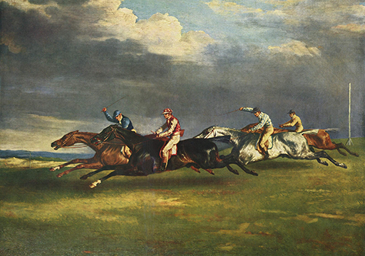
13 Théodore Géricault, Carreras de caballos en Epsom, 1821. Óleo sobre lienzo, 92 x 122,5 cm; Museo del Louvre, París.
Millares de personas, durante siglos, han observado el galope de los caballos, han asistido a carreras y cacerías, han contemplado cuadros y grabados hípicos, con caballos en una carga de combate o al galope tras los perros. Ninguna de esas personas parece haberse dado cuenta de cómo se presenta realmente un caballo cuando corre. Pintores grandes y pequeños los han presentado siempre con las patas extendidas en el aire, como el gran pintor del siglo XIX Théodore Géricault en un famoso cuadro de las carreras de Epsom (ilustración 13). Hace unos ciento veinte años, cuando la cámara fotográfica se perfeccionó lo suficiente como para poder tomar instantáneas de caballos en plena carrera, quedó demostrado que tanto los pintores como su público se habían equivocado por entero. Ningún caballo al galope se mueve del modo que nos parece tan «natural», sino que extiende sus patas en tiempos distintos al levantarlas del suelo (ilustración 14). Si reflexionamos un momento, nos daremos cuenta de que difícilmente podría ser de otro modo. Y sin embargo, cuando los pintores comenzaron a aplicar este nuevo descubrimiento, y pintaron caballos moviéndose como efectivamente lo hacen, todos se lamentaban de que sus cuadros mostraran un error.
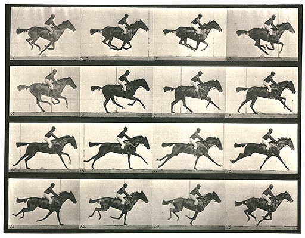
14 Eadweard Muybridge, Caballo al galope, 1872. Secuencia fotográfica; Museo Kingston-upon-Thames.
Sin duda que es éste un ejemplo exagerado, pero errores semejantes no son en modo alguno tan infrecuentes como podemos creer. Propendemos a aceptar colores o formas convencionales como si fuesen exactos. Los niños acostumbran creer que las estrellas deben ser «estrelladas», aunque realmente no lo son. Las personas que insisten en que el cielo de un cuadro tiene que ser azul, y las hierbas verdes, no se conducen de manera muy distinta que los niños. Se indignan si ven otros colores en un cuadro, pero si procuramos olvidar cuanto hemos oído acerca de las verdes hierbas y los cielos azules, y contemplamos las cosas como si acabáramos de llegar de otro planeta en un viaje de descubrimiento y las viéramos por primera vez, encontraríamos que las cosas pueden adoptar las coloraciones más sorprendentes. Los pintores, ahora, proceden como si realizaran semejante viaje de descubrimiento. Quieren ver el mundo con un nuevo mirar, soslayando todo prejuicio e idea previa acerca de si la carne es rosada, y las manzanas, verdes o rojas. No es fácil desembarazarse de esas ideas preconcebidas, pero los artistas que mejor lo consiguen producen con frecuencia las obras más interesantes. Ellos son los que nos enseñan a contemplar nuevos atractivos en la naturaleza, la existencia de los cuales nunca nos pudimos imaginar. Si les seguimos atentamente y aprendemos algo de ellos, hasta una simple ojeada desde nuestra ventana puede convertirse en una maravillosa aventura.
No existe mayor obstáculo para gozar de las grandes obras de arte que nuestra repugnancia a despojarnos de costumbres y prejuicios. Un cuadro que represente un tema familiar de manera inesperada es condenado a menudo por no mejor razón que la de no parecer exacto. Cuanto más frecuentemente hemos visto aparecer un tema en arte, tanto más seguros estamos de que tiene que representarse siempre de manera análoga. Respecto a los temas bíblicos, en especial, tal creencia llega al máximo. Aunque sabemos que las Sagradas Escrituras nada nos dicen acerca de la fisonomía del Cristo, y que el Dios mismo no puede ser representado en forma humana, y aunque sabemos que fueron los artistas del pasado quienes primeramente crearon las imágenes a las que nos hemos acostumbrado, muchos se inclinan todavía a creer que apartarse de esas formas tradicionales constituye una blasfemia.
En realidad, acostumbraban ser los artistas que leían las Sagradas Escrituras más devota y atentamente quienes trataban de imaginar una representación completamente nueva de los temas de la historia sagrada. Procuraban olvidar todos los cuadros que habían visto, para representarse cómo debió de aparecer en realidad el Cristo niño en el pesebre y los pastores que venían a adorarle, o cómo empezaron unos pescadores a predicar el evangelio. Ocurrió una y otra vez que semejantes esfuerzos de un gran artista para leer el viejo texto con ojos enteramente nuevos sorprendió e irritó a gentes irreflexivas. Un escándalo típico de esta clase se produjo en torno a Caravaggio, artista verdaderamente atrevido y revolucionario que pintó hacia 1600. Le fue encomendado un cuadro de san Mateo para el altar de una iglesia de Roma. El santo tenía que ser representado escribiendo el evangelio, y, para que se viera que los evangelios eran la palabra del Dios, tenía que aparecer un ángel inspirándole sus escritos. Caravaggio, que era un joven artista apasionado y sin prejuicios, consideró cuán penosamente un pobre anciano jornalero, y sencillo publicano, se habría puesto de pronto a escribir un libro. Así pues, pintó a san Mateo (ilustración 15) con la cabeza calva y descubierta, los pies llenos de polvo, sosteniendo torpemente el voluminoso libro, la frente arrugada bajo la insólita necesidad de escribir. A su lado pintó un ángel adolescente, que parece acabado de llegar de lo alto, y que guía con suavidad la mano del trabajador, como puede hacer un maestro con un niño. Cuando Caravaggio hizo entrega de su obra a la iglesia en cuyo altar tenía que ser colocada, la gente se escandalizó por considerar que carecía de respeto hacia el santo. El cuadro no fue aceptado, y Caravaggio tuvo que repetirlo. Esta vez no quiso aventurarse y se atuvo estrictamente a las ideas usuales acerca de cómo tenía que ser representado un ángel o un santo (ilustración 16). La nueva obra sigue siendo excelente, pues Caravaggio hizo todo lo posible por que resultara interesante y llena de vida, pero advertimos que es menos honrada y sincera que la anterior.
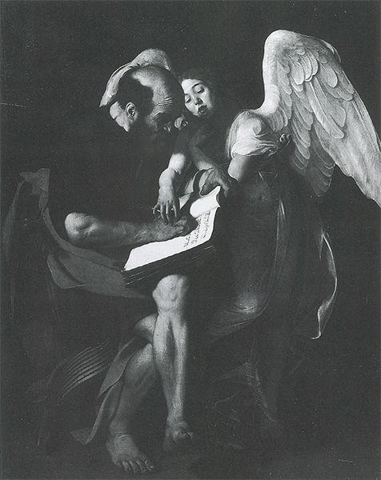
15 Caravaggio, San Mateo, 1602. Pintura de altar; óleo sobre lienzo, 223 x 183 cm; destruido; antiguamente, en Museo del káiser Federico, Berlín.
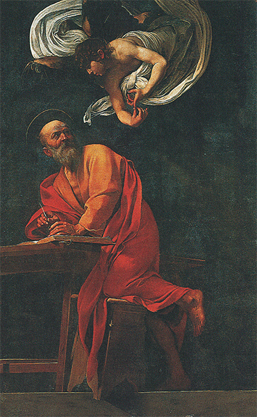
16 Caravaggio, San Mateo, 1602. Pintura de altar; óleo sobre lienzo, 296,5 x 195 cm; iglesia de S. Luigi dei Francesi, Roma.
La anécdota revela los perjuicios que pueden ocasionar quienes desprecian y censuran las obras de arte por motivos erróneos. La idea más importante con la que tenemos que familiarizarnos es que las que nosotros llamamos obras de arte no constituyen el resultado de alguna misteriosa actividad, sino que son objetos realizados por y para seres humanos. Un cuadro parece algo muy distante cuando está, con su cristal y su marco, colgado de la pared; y en nuestros museos, muy justamente, está prohibido tocar los objetos a la vista. Pero originariamente fueron hechos para ser tocados y manejados, comprados, admitidos o rechazados. Pensemos también que cada uno de sus trazos es resultado de una decisión del artista: que pudo reflexionar acerca de ellos y cambiarlos muchas veces, que pudo titubear entre quitar aquel árbol del fondo o pintarlo de nuevo, que pudo haberse complacido en conferir, mediante una hábil pincelada, un insólito resplandor a una nube iluminada por el sol, y que colocó tal o cual ilustración con desgana ante la insistencia del comprador. Muchos cuadros y esculturas que cuelgan ahora a lo largo de las paredes de nuestros museos y galerías no se concibieron para ser gozados artísticamente, sino que se ejecutaron para una determinada ocasión y con un propósito definido, que estuvieron en la mente del artista cuando éste se puso a trabajar en ellos.
Por otra parte, esas nociones con las que nosotros, como intrusos, generalmente abrumamos a los artistas, ideas acerca de la belleza y la expresión, raramente son mencionadas por ellos. No siempre ha sido así, pero lo fue durante muchos siglos en el pasado, y vuelve a suceder ahora. La razón de esto se halla, en parte, en el hecho de que los artistas son, por lo general, gente callada, hombres que considerarían embarazoso emplear palabras tan grandilocuentes como Belleza. Se juzgarían presuntuosos si hablaran de «expresar sus emociones» y otras frases teatrales por el estilo. Tales cosas las dan por supuestas y consideran inútil hablar de ellas. Esta es una razón, al parecer, convincente. Pero existe otra. En las preocupaciones cotidianas del artista, esas ideas desempeñan un papel menos importante de lo que, a mi entender, sospecharían los profanos. Lo que le preocupa a un artista cuando proyecta un cuadro, realiza apuntes o titubea acerca de cuándo ha de dar por concluida su obra, es algo mucho más difícil de expresar con palabras. Él tal vez diría que lo que le preocupa es si ha acertado. Ahora bien, solamente cuando hemos comprendido lo que el artista quiere decir con tan simple palabra como acertar, empezamos a comprenderle efectivamente.
Considero que únicamente podemos confiar en esta comprensión si examinamos nuestra propia experiencia. Claro es que no somos artistas, que nunca nos hemos propuesto pintar un cuadro ni se nos ha pasado tal idea por la cabeza. Pero esto no quiere decir que no nos hayamos encontrado frente a problemas semejantes a los que integran la vida del artista. En efecto, estoy deseoso de demostrar que difícilmente habrá nadie que no haya, cuando menos, vislumbrado problemas de tal índole, aun en el terreno más modesto. Quien quiera que haya tratado de componer un ramo de flores, mezclando y cambiando los colores, poniendo un poco aquí y quitando allí, ha experimentado esa extraña sensación de equilibrar formas y matices, sin ser capaz de decir exactamente qué clase de armonía es la que se ha propuesto conseguir. Hemos advertido: una mancha de rojo aquí lo altera todo; o este azul está muy bien, pero no va con los otros colores; y de pronto, una rama de verdes hojas parece acertarlo todo. «No tocarlo más —decimos—, ahora está perfecto.» No todo el mundo, lo admito, pone tanto cuidado en arreglar flores, pero casi todo el mundo tiene algo que desea colocar con acierto. Puede tratarse de encontrar el cinturón acertado que haga juego con cierto vestido, o de cualquier otra cosa que en nuestra vida cotidiana nos salga al paso. Por trivial que pueda ser, en cada caso percibimos que un poco de más o un poco de menos rompe el equilibrio, y que sólo hay una proporción en la que la cosa es como debe ser.
Las personas que se preocupan de este modo respecto a las flores o los vestidos pueden parecernos exageradas, porque sentimos que tales cosas no merecen demasiada atención. Pero lo que en ocasiones puede constituir una mala costumbre en la vida real y es, por ello, suprimido o disimulado, puede encajar perfectamente en el terreno del arte. Cuando se trata de reunir formas o colocar colores, un artista debe ser siempre exagerado o, más aún, quisquilloso en extremo. Él puede ver diferencias en formas y matices que nosotros apenas advertiríamos. Por añadidura, su tarea es infinitamente más compleja que todas las experiencias que nosotros podamos realizar en nuestra vida corriente. No sólo tiene que equilibrar dos o tres colores, formas o calidades, sino que jugar con infinitos matices. Tiene, literalmente, sobre la tela, centenares de manchas y de formas que debe combinar hasta que parezcan acertadas. Una mancha verde, de pronto puede parecer amarilla porque ha sido colocada demasiado cerca de un azul fuerte; puede percibir que todo se ha echado a perder, que hay una nota violenta en el cuadro y que necesita comenzar de nuevo. Puede forcejear en torno a este problema; pasar noches sin dormir pensando en él; estarse todo el día delante del cuadro tratando de colocar un toque de color aquí o allí, y borrarlo todo otra vez, aunque no podamos darnos cuenta del cambio. Pero cuando ha vencido todas las dificultades sentimos que ha logrado algo en lo que nada puede ser añadido, algo que está verdaderamente acertado, un ejemplo de perfección en nuestro muy imperfecto mundo.
Tómese, por ejemplo, una de las famosas madonas de Rafael, La Virgen del prado (ilustración 17). Es bella y atractiva, sin duda; los personajes están admirablemente dibujados, y la expresión de la Virgen mirando a los dos niños es inolvidable. Pero si observamos los apuntes de Rafael para este cuadro (ilustración 18), empezamos a darnos cuenta de que todo eso no le preocupó mucho. Lo daba por supuesto. Lo que una y otra vez trató de conseguir fue el acertado equilibrio entre las figuras, la exacta relación entre ellas, que debía producir el más armonioso conjunto. En el rápido apunte del ángulo izquierdo, pensó dejar al Cristo niño avanzando y volviéndose a mirar a su madre, e intentó distintas posturas para la cabeza de esta última que se correspondieran con el movimiento del niño. Después decidió volver al niño hacia atrás y dejar que la mirara. Intentó otra colocación, esta vez introduciendo al pequeño san Juan, pero en lugar de dejar al Cristo niño mirándole, lo puso mirando fuera del cuadro. Después hizo otro intento —evidentemente impacientándose ya— colocando la cabeza del niño en distintas actitudes. Hay varias páginas como ésta en su cuaderno de apuntes, en las cuales trata una y otra vez de combinar de la mejor manera estas tres figuras. Pero si volvemos ahora al cuadro terminado veremos que, al final, acertó con la más adecuada. Todo parece hallarse en el lugar que le corresponde, y el equilibrio y armonía que consiguió Rafael tras su ardua labor parecen tan naturales y sin esfuerzo que apenas podemos darnos cuenta de ello. Y es esa armonía y ese equilibrio los que hacen más hermosa la hermosura de la Virgen y más delicada la delicadeza del Cristo niño y de san Juan niño.
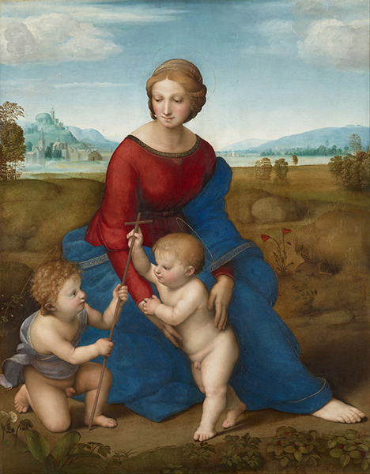
17 Rafael, La Virgen del prado, 1505-1506. Óleo sobre tabla, 113 x 88 cm; Museo de Arte e Historia, Viena.
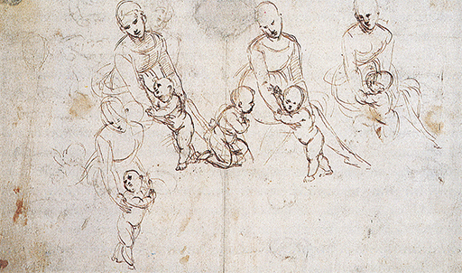
18 Rafael. Cuatro estudios para La Virgen del prado, 1505-1506. Página de un cuaderno de apuntes; pluma y tinta sobre papel, 36,2 x 24,5 cm; Galería Albertina, Viena.
Resulta fascinante observar a un artista luchando de este modo por conseguir el equilibrio justo, pero si le preguntáramos por qué hizo tal cosa o suprimió aquella otra, no sabría contestarnos. No siguió ninguna regla fija. Intuyó lo que tenía que hacer. Es cierto que algunos artistas, o algunos críticos en determinadas épocas, han tratado de formular las leyes de su arte; pero inevitablemente resulta que los artistas mediocres no consiguen nada cuando tratan de aplicar leyes semejantes, mientras que los grandes maestros podrían prescindir de ellas y lograr sin embargo una nueva armonía como nadie imaginara anteriormente. Cuando el gran pintor inglés sir Joshua Reynolds explicaba a sus alumnos de la Real Academia que el azul no debe ser colocado en los primeros términos del cuadro, sino ser reservado para las lejanías del fondo, las colinas que se desvanecen en el horizonte, su rival Gainsborough —según se cuenta— quiso demostrar que tales reglas académicas son por lo general absurdas; con este fin pintó su famoso Blue Boy (Muchacho azul), cuyo ropaje azul, en la parte central del primer término, se yergue triunfante contra la coloración —cálida— del fondo.
La verdad es que resulta imposible dictar normas de esta clase, porque nunca se puede saber por anticipado qué efectos desea conseguir el artista. Puede incluso permitirse una nota aguda o violenta si percibe que en ella está el acierto. Como no existen reglas que nos expliquen cuándo un cuadro o una escultura está bien, por lo general es imposible explicar exactamente con palabras por qué creemos hallarnos frente a una obra maestra. Pero esto no quiere decir que una obra dada sea tan buena como cualquier otra, o que no se pueda discutir en cuestión de gustos. Si no a otra finalidad, tales discusiones nos llevan a contemplar los cuadros y, cuanto más lo hacemos así, más cosas advertimos en ellos que anteriormente se nos habían pasado por alto. Empezamos a sentir mejor la clase de armonía que cada generación de artistas ha tratado de conseguir. Y cuanto más claramente la percibamos, mejor gozaremos de ella, lo cual es, a fin de cuentas, aquello de lo que se trata. El antiguo refrán de que «Sobre gustos no hay nada escrito» puede ser verdad, pero no debe negarse el hecho comprobado de que el gusto puede desarrollarse. He aquí una experiencia corriente acerca de que todo el mundo puede tener sus gustos en una esfera modesta. A las personas que no acostumbran beber té, una infusión puede parecerles igual que otra. Pero si tienen tiempo, deseos y oportunidad para darse a la búsqueda de los refinamientos posibles, pueden llegar a convertirse en verdaderos connaisseurs, capaces de distinguir exactamente qué tipo de infusión prefieren, y su mayor conocimiento les llevará a un mejor paladeo de lo que elijan.
Claro está que el gusto en arte es algo infinitamente más complejo que en lo que se refiere a manjares o bebidas. No sólo se trata de descubrir una variedad de aromas sutiles, sino algo más serio e importante. Después de todo, ya que los grandes maestros se han entregado por entero a esas obras, han sufrido por ellas y por ellas han sudado sangre, a lo menos que tienen derecho es a pedirnos que tratemos de comprender lo que se propusieron realizar.
Nunca se acaba de aprender en lo que al arte se refiere. Siempre existen cosas nuevas por descubrir. Las grandes obras de arte parecen diferentes cada vez que uno las contempla. Parecen tan inagotables e imprevisibles como los seres humanos. Es un inquieto mundo propio, con sus particulares y extrañas leyes, con sus aventuras propias. Nadie debe creer que lo sabe todo en él, porque nadie ha podido conseguir tal cosa. Nada, sin embargo, más importante que esto precisamente: para gozar de esas obras debemos tener una mente limpia, capaz de percibir cualquier indicio y hacerse eco de cualquier armonía oculta; un espíritu capaz de elevarse por encima de todo, no enturbiado con palabras altisonantes y frases hechas. Es infinitamente mejor no saber nada acerca del arte que poseer esa especie de conocimiento a medias propio del esnob. El peligro es muy frecuente. Hay personas, por ejemplo, que han comprendido las sencillas cuestiones que he tratado de señalar en este capítulo y que saben que hay grandes obras de arte que no poseen ninguna de las cualidades evidentes de belleza, expresión y corrección de dibujo; pero han llegado a enorgullecerse tanto de lo que saben, que pretenden no gustar sino de aquellas obras que ni son bellas ni están correctamente dibujadas. Les obsesiona el temor de ser consideradas incultas si confiesan que les gusta una obra demasiado claramente agradable o emotiva. Terminan por ser esnobs, perdiendo el verdadero disfrute del arte y llamando «muy interesante» a todo aquello que verdaderamente encuentran repulsivo. Me ofendería ser responsable de una incomprensión de esta índole. Preferiría no ser creído en absoluto que serlo de semejante manera.
En los capítulos que siguen trataré de la historia del arte, que es la historia de la construcción de edificios y de la realización de cuadros y estatuas. Creo que conociendo algo de esta historia ayudaré a comprender por qué los artistas proceden de un modo peculiar, o por qué se proponen producir determinados efectos. Más que nada, éste es un buen modo de formar vuestra manera de ver las características peculiares de las obras de arte y de acrecentar vuestra sensibilidad para los más finos matices de diferencia. Acaso sea éste el único medio de aprender a gozarlas en sí mismas; pero no está exento de peligros. A veces observamos a ciertas personas que pasean a lo largo de un museo con el catálogo en la mano. Cada vez que se detienen delante de un cuadro buscan afanosamente su número. Podemos verlas manosear su catálogo, y tan pronto como han encontrado el título o el nombre se van. Podían perfectamente haberse quedado en casa, pues apenas si han visto el cuadro. No han hecho más que revisar el catálogo. Se trata de inteligencias de corto alcance que no están hechas para la contemplación gozosa de ninguna obra de arte.
Quienes han adquirido conocimiento de la historia del arte corren el riesgo, a veces, de caer en estas trampas. Cuando ven una obra de arte no se detienen a contemplarla, sino que buscan en su memoria el rótulo correspondiente. Pueden haber oído decir que Rembrandt fue famoso por su chiaroscuro —que es, en italiano, la denominación técnica del contraste de luz y sombra— y por eso mueven la cabeza significativamente al ver un Rembrandt, murmurando: «¡Maravilloso chiaroscuro!», y pasan al cuadro siguiente. Deseo verme enteramente libre de caer en ese peligro de conocimiento a medias y esnobismo, pues todos corremos el riesgo de sucumbir a tales tentaciones, y un libro como éste puede aumentarlas. Me gustaría ayudar a abrir los ojos, no a desatar las lenguas. Hablar diestramente acerca del arte no es muy difícil, porque las palabras que emplean los críticos han sido usadas en tantos sentidos que ya han perdido toda precisión. Pero mirar un cuadro con ojos limpios y aventurarse en un viaje de descubierta es una tarea mucho más difícil, aunque también mucho mejor recompensada. Es difícil precisar cuánto podemos traer con nosotros al regreso.